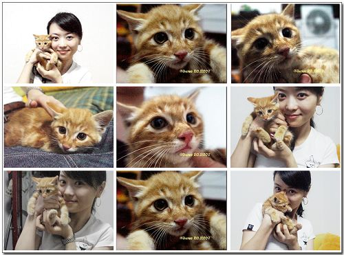
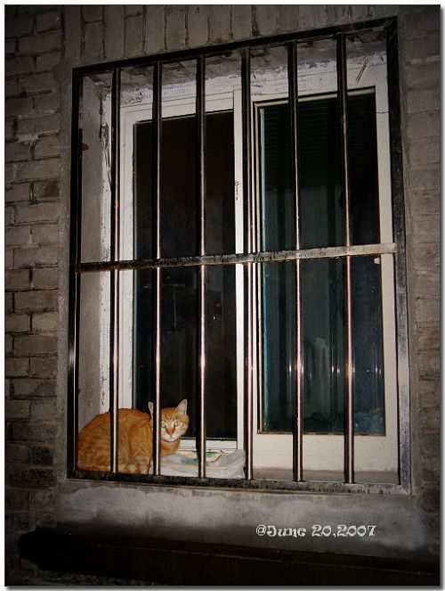
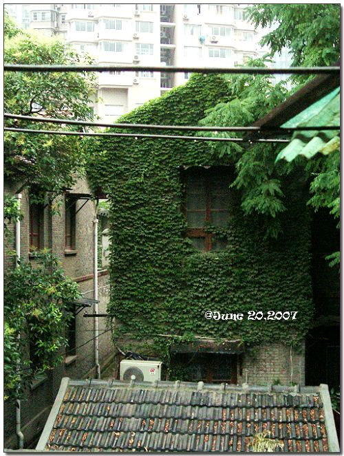

好友家一个多月大的五只小猫待字闺中，一只狸花色，两只黄色，两只花猫。小时侯养过一只黄色大猫，很肥很肥的，冬天的晚上我会偷偷把它塞进被窝取暖，深夜醒来看到它的眼睛在黑暗中象两个小灯泡，坐在我的枕头上一动不动的看着我。现在无法想象当时怎么从来没考虑过卫生问题呢？那只长得很肥，喜欢懒洋洋的发出呼噜呼噜的声音。后来我妈认为我对猫咪放了太多精力就把猫咪送走了：（
昨天晚上去朋友家看猫咪，看见生人来几只小猫躲起来了，好容易抓了那只狸花猫和一只黄色的猫，晚上拍出来的照片光线不好，又不能用闪光灯，担心吓着小猫咪，凑合的看吧。养猫咪有个好处，不用象养狗一样每天必须出去遛。猫咪自己很爱干净，经常自己用舌头梳理皮毛，大小便知道在固定的便盆里，聪明的小动物。
好友说如果下周一前没有人领养的话，她爸爸就要给旁边的杂货铺老板了，55555555~~我最喜欢这只小黄猫，象只小老虎，眼睛大大的很可爱。而且抱它的时候它很懂事的把利爪收在肉垫下，可爱极了~有个做皮草出口的朋友说我肯定做不了皮草这行，觉得我对动物有种特殊的感情，而她每年要做几万条狸猫出口，用猫皮做褥子，够残忍。
主人为宠物做计划生育太重要了，这边我在MSN上向人推销猫咪，对方向我推销金毛犬，晕~~一年零四个月,50几斤重。这就是我当年一直不让妞妞生育的原因，生下来的小崽子如何安排是个问题。
一直有个愿望，就是有个大大的院子，可以养花草养狗狗和猫咪，天天与它们相伴，这样的生活对于上班族来说是奢望，基本不可能。所以我想要是能退休就好了。

猫奶奶的女儿，谨慎的猫妈妈，据说生了好几窝了。

看破红尘的猫奶奶，从我去她家到天黑离开，猫奶奶一直守着食盆蹲在窗台上，让人想到孤僻的梅超风躲在阴暗的洞穴里苦练九阴白骨爪的情形*—%#%—……—%生育过一窝小猫后主人给她做了绝育手术，猫奶奶从此性格大变，不问世间情为何物......

推荐一个养猫人的BLOG:my kitten tigger&happy
南京这样的民国建筑越来越少，走进这样的居住区有种久违的感觉，小时候也曾居住过这样的老房子，勾起亲切而温和的回忆。如果拆迁了，原本自由自在生活的家猫以及那些野猫将不再有房顶可以跳跃了。

9 Responses to “待领养的小猫”
2007-06-21
sherry家哪来的这么多小猫猫啊，好可爱:)
上边这个pp很养眼，是sherry家窗口照的？
2007-06-22
一直想养，家里不让，唉~
2007-06-22
Hi,
I was haveing them. Now I’d like to get one, would you mind let me know how to find them?
Thanks a lot,
Okdata
2007-06-22
okdata，您在美国，快递过去吗？：）
jiajialing ，给你妈妈弄一只解解闷，如何？的确是从Sherry家阳台上拍的，是不是很有感觉的建筑？
2007-06-22
我在北京，可以领养两只吗？
2007-06-22
当然可以，但是怎么运到北京呢？
2007-06-22
哈，自从上次我们家的狗死了，我妈就再也不养了:)对了，上www.kijiji.cn上发布一下
2007-06-24
好可爱啊！若俺在南京，绝对给她一个小家。
2007-06-24
Sorry for delay:)
I checked my mail box but forgot this site:)
I am in Nanjing, I guess your friend should live in downtown too:) Would you mind send mail to my box because it’s difficult to login your blog.
Have a good night,
Okdata
Leave A Reply
存档只读，评论已关闭。